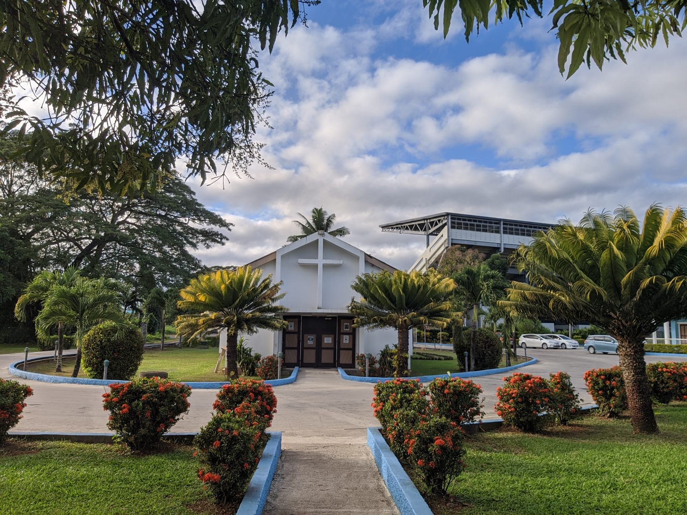
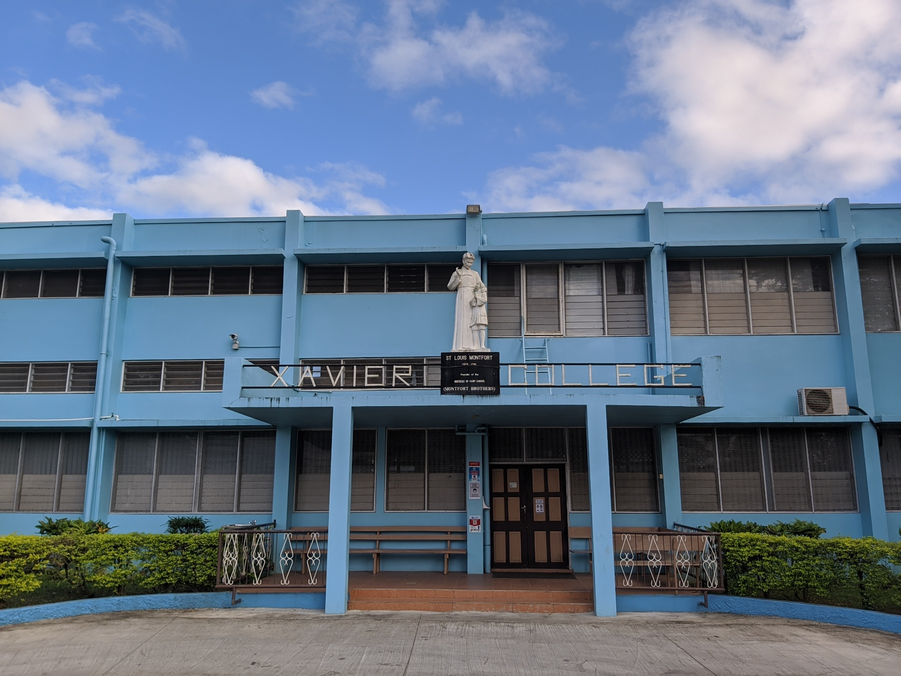
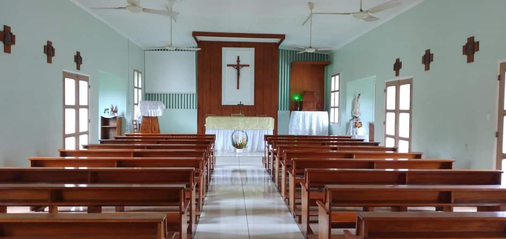

Welcome to Our School Community
Xavier College has been part of the Ba community since 1953. We offer a wide range of subjects across ten departments, giving students in the Western Division a real choice in how they shape their future. From science labs to the rugby field, from the Commerce classroom to the Agriculture plot — there's a place here for every student who's willing to put in the work.
Our students come from all corners of Ba and the broader Western Division, bringing with them different backgrounds, languages, and talents. That mix is one of our greatest strengths. Whether you're Indo-Fijian, iTaukei, or from any other community, Xavier College is a place where you belong and where you are expected to give your best.
Our Vision, Mission & Theme
Quality Education
All round quality education for every youth enrolled at Xavier College based on Christian principles and values, fostering academic and moral growth.
Youth Development
Developing youth into upright, creative and loyal citizens imbibed with love and concern for others, equipped to contribute to the economic and cultural progress of Fiji.
Educational Value
Each year the college adopts a guiding theme that shapes how teachers and students approach their work together. It keeps the whole school community pointed in the same direction.
Academic Departments
Comprehensive subject options led by dedicated heads of department.
English, Hindi, and iTaukei Fijian — the Language Department helps students find their voice in writing, debate, and everyday communication.
From algebra to calculus to physics experiments, Maths and Physics builds the problem-solving skills students carry with them for life.
Biology, Chemistry, and Earth Science taught hands-on in the lab. Students learn to ask good questions, design experiments, and think like scientists.
History, Geography, and Social Science give students the context to understand Fiji, the Pacific, and the wider world around them.
Cooking, nutrition, and garment-making — practical skills that students use at home and that open doors to hospitality and fashion careers.
Word processing, spreadsheets, computer basics, and office skills. The department prepares students for today's workplaces and further study in IT.
PE, music, art, and craft — PEMAC is where students develop confidence, creativity, and teamwork beyond the classroom.
Woodwork, metalwork, and technical drawing. Industrial Arts gives students practical trade skills recognised under the national TVET framework.
Accounting, business studies, and economics — Commerce sets students up for careers in finance, management, and enterprise across Fiji.
Crop production, animal care, soil science, and agri-business — Agriculture reflects the real importance of farming to Fiji's economy and communities.
Campus Life & Activities
Photographic snapshots of student life, academic celebrations, and sporting events.



